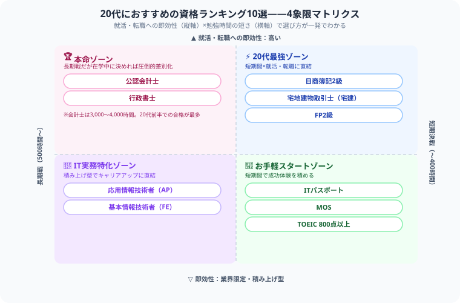

20代におすすめ資格ランキング2026｜就活・転職・年収アップに役立つ国家資格まとめ
「就活や転職で周りに圧倒的な差をつけたい！でも、自分の貴重な20代の時間をどの資格に投資すれば一番コスパがいいんだろう……」と悩んでテキストを検索した瞬間……『うわっ、なんじゃこりゃ、資格多すぎてどれが本当に人生の武器になるのか分からんわ！』とフリーズしていませんか？（笑）
毎日会計士という超巨大な難関資格と1本集中で格闘している、まさに20代当事者である僕の視点から、かけた時間と体力を最速で10倍にして回収できる【20代に本当に価値のある10資格】を、ガチの本音主観で熱くナビゲートします！
最後まで読んでもらえたら、この下にある【いいねボタン】をポチッと押してもらえると、めちゃくちゃ励みになります！それでは、一緒に武器を選びに行きましょう！
20代が資格を取るべき理由
僕自身、毎日この2軸を意識しながら勉強時間を組み立てています。20代のうちに資格へ投資すべき理由は、感覚論じゃなくてちゃんとロジックがあります。
- 記憶力・体力がピーク：20代は記憶の定着率が高く、長時間学習がしやすい
- 就活・転職で即効性がある：資格のアピール効果が最も高い時期
- 30代・40代への投資になる：今の努力が10年後のキャリアの土台になる
- 学生は受験資格なしで受けられる資格が多い：社会人になると時間が減る
目的別おすすめ資格マップ
| 目的 | おすすめ資格 | 優先度 |
|---|---|---|
| 就活（IT系） | ITパスポート・基本情報技術者 | ★★★★★ |
| 就活（金融系） | FP2級・簿記2級 | ★★★★★ |
| 就活（不動産系） | 宅建 | ★★★★★ |
| 第二新卒転職 | FP2級・簿記2級・TOEIC800 | ★★★★☆ |
| 将来の独立・開業 | 行政書士・社労士・宅建 | ★★★★☆ |
| 在学中の最強コンボ | 公認会計士・税理士（1〜2科目） | ★★★★★ |
この表を眺めるだけでも目移りすると思うので、僕がいつも頭の中で使っている整理法をそのまま図解にしました。縦軸は「就活・転職への即効性」、横軸は「勉強時間の短さ（いわゆるタイパ）」です。日商簿記2級・宅建・FP2級が右上の「20代最強ゾーン」に君臨しているのは、独占業務や実務直結度の高さゆえに、限られた勉強時間でも評価という形でリターンが跳ね返ってくるからです。

20代おすすめ資格ランキングTOP10
ITパスポート就活入門
勉強時間：50〜100時間｜合格率：約50%｜難易度：★★☆☆☆
IT系・非IT系問わず就活でアピールできる国家資格。AIやDXが加速する現代では文系就活生が取得しているだけで差別化になる。CBT方式で通年受験可能。大学2〜3年生での取得がおすすめ。正直、僕の周りでも「とりあえずコレ」で自信をつけて次の資格に進んだ友人が何人もいます。
FP2級（ファイナンシャルプランナー）汎用性最強
勉強時間：150〜200時間｜合格率：約40%｜難易度：★★★☆☆
金融・保険・不動産・税金・年金の知識が身につく汎用性最強の資格。銀行・証券・保険会社への就職に直結するだけでなく、副業ライター・YouTube・家計相談など活用の幅が広い。FP3級→2級の順で進めるのが定番。
日商簿記2級
勉強時間：200〜350時間｜合格率：約20〜30%｜難易度：★★★☆☆
経理・財務・経営企画への就職・転職で定番の資格。商業高校生から会計士受験生まで幅広い層が取得する。財務3表（損益計算書・貸借対照表・キャッシュフロー計算書）の読解力が身につく。僕も会計士の勉強を始める前、最初にくぐった扉がこれでした。
基本情報技術者（FE）
勉強時間：150〜200時間｜合格率：約40〜50%｜難易度：★★★☆☆
IT系就職の登竜門。SIer・IT企業の新卒採用で高評価を受ける。CBT方式で通年受験可能なため、就活前に余裕を持って取得できる。情報系学生なら応用情報まで在学中に取得するのが理想。
宅地建物取引士（宅建）
勉強時間：300〜400時間｜合格率：約15〜17%｜難易度：★★★☆☆
不動産業界への就職に圧倒的に有利。一般企業の総務・財務部門でも評価される。20代前半で取得しておくと30代での転職・独立時にも使える長期的な投資資格。
TOEIC 800点以上
勉強時間：200〜400時間（現状スコアによる）｜外資系・グローバル企業・商社への就職・転職で必要とされる英語力の証明。500点→730点→800点と段階的に上げていく戦略が有効。20代での英語習得はその後の海外機会にも直結する。
公認会計士在学中最強
勉強時間：3,000〜4,000時間｜合格率：約10%｜難易度：★★★★★
在学中に合格すると就活で最強の武器になる。Big4監査法人への就職で新卒600〜800万円スタートも可能。20代前半での合格者が最も多い試験。リスクは高いが、成功したときのリターンは圧倒的。正直、僕が毎日ここに全ベットしているのはこのリターンを信じているからです。
行政書士
勉強時間：500〜800時間｜合格率：約10〜15%｜難易度：★★★★☆
大学法学部・政治経済学部の学生が取得しやすい法律系資格。合格後すぐに独立開業可能。社労士・宅建とのダブルライセンスで総合的な法律・不動産の専門家になれる。
応用情報技術者（AP）
勉強時間：300〜500時間｜合格率：約20〜25%｜難易度：★★★☆☆
IT系就職後のキャリアアップを見据えた資格。在学中または入社1〜2年以内の取得が目標になりやすい。基本情報→応用情報の順で取得すると評価が上がる。文系科目（経営戦略・プロジェクト管理）を選択できる点がポイント。
MOS（Microsoft Office Specialist）
勉強時間：40〜80時間｜合格率：約70%｜難易度：★★☆☆☆
就活でのPCスキル証明として手軽に取得できる資格。ExpertレベルはWord・Excelの高度な機能を習得できる。他の資格との並行取得がしやすく、事務職・営業職の就活で評価される。
学生・社会人別おすすめ資格
大学生（1〜3年生）
- ITパスポート → 基本情報技術者（IT系志望）
- FP3級 → FP2級（金融・保険志望）
- 簿記3級 → 2級（経理・会計志望）
- TOEIC 600 → 730 → 800（外資・商社志望）
- 公認会計士（在学中合格を狙う場合）
新卒〜入社3年目（22〜25歳）
- 業界に合った資格（IT：基本情報、不動産：宅建、金融：FP2級）
- TOEIC 800点以上（昇格・転職条件）
- 簿記2級（社会人スキルの土台）
第二新卒・転職期（25〜29歳）
- 転職先の業界に必要な資格を集中取得
- FP2級・簿記2級は転職で汎用的に使える
- 行政書士・社労士は30代の独立を視野に入れた先行投資に
ここまで読んでくれて本当にありがとうございます。20代の一番貴重な時間を使って、自分の未来を切り開くために一歩を踏み出そうとしているあなたは、それだけでもう最高の仲間だと思っています。僕も毎日会計士の勉強と格闘しながら、同じように自分の武器を磨いている最中です。一緒に、後悔のない20代にしていきましょう！
この記事が少しでも役に立ったら、僕の毎日の執筆モチベーション維持のために、この下にある【いいねボタン】をポチッと押してもらえると、めちゃくちゃ嬉しいです！